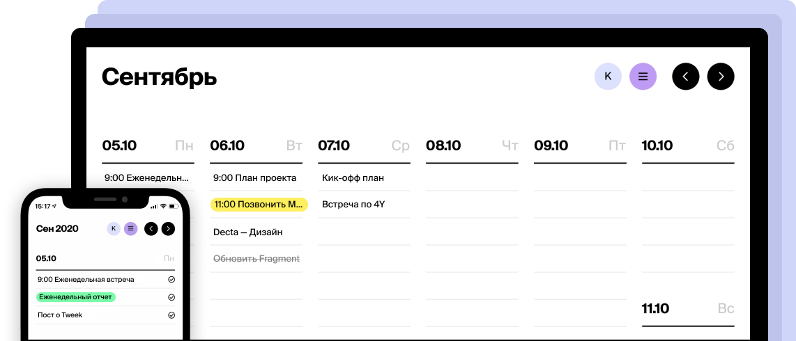
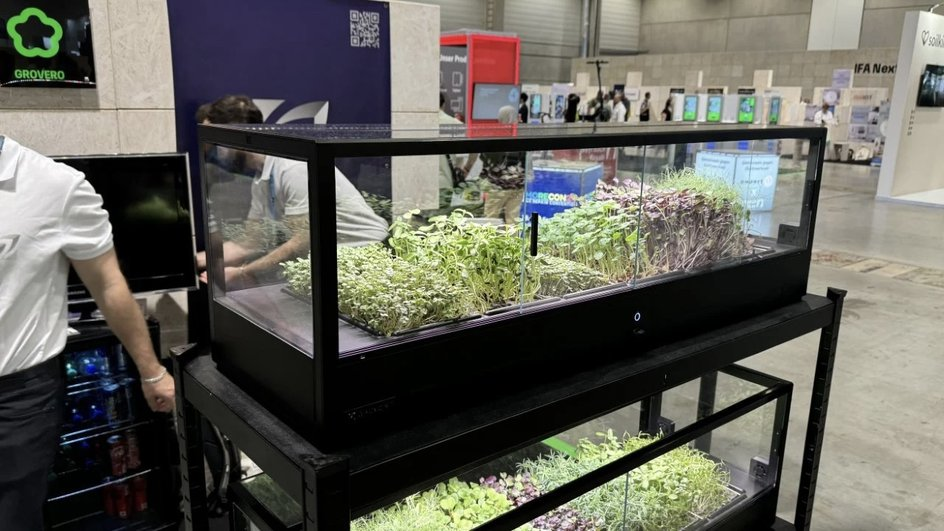

Как идея «Умный органайзер» превратилась в продукт «MyTaskMaster»
Идея «Умный органайзер», предложенная участником Have Idea, превратилась в продукт «MyTaskMaster», который привлек 1000 пользователей всего за три месяца после запуска. Идея заключалась в создании приложения, которое не просто было бы списком задач, а использовало бы искусственный интеллект для оптимизации расписаний и напоминаний. Команда разработчиков собралась и в течение нескольких месяцев провела множество опросов пользователей, чтобы определить наиболее востребованные функции.
После успешного тестирования бета-версии, приложение было запущено в App Store и Google Play. Уникальный дизайн, интуитивно понятный интерфейс и возможность интеграции с календарями сделали его популярным среди студентов и профессионалов, стремящихся улучшить свою продуктивность. Вскоре «MyTaskMaster» стал одним из самых скачиваемых приложений в своей категории, вдохновляя других участников платформы Have Idea на реализацию своих идей.

Идея «Смарт-сад» и ее реализация
Идея «Смарт-сад», реализованная командой на платформе, стала успешным стартапом. Эта идея возникла в результате наблюдений за недостатком информации и ресурсов для городских садоводов. Команда решила создать устройство, которое собирало бы данные о состоянии растений и окружающей среды, и позволяло бы пользователям получать рекомендации по уходу через приложение на смартфоне.
После привлечения инвестиций и разработки прототипа, стартап получил одобрение от нескольких экологических организаций и успешно закончил краудфандинговую кампанию. «Смарт-сад» быстро стал любимым аксессуаром среди городских любителей растений, а команда приняла участие в нескольких выставках, что помогло привлечь дополнительное внимание к продукту. В результате, стартап не только сумел обеспечить устойчивый доход, но и стал активным участником в продвижении идеи городского зеленого хозяйства.